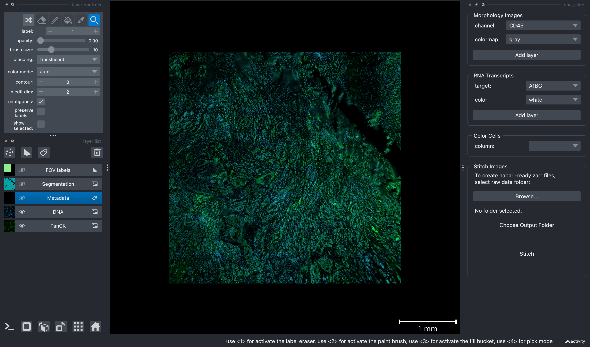

![]()
from importlib.metadata import metadata
import numpy
import pandas as pd
import os
from napari_cosmx.gemini import Gemini
import imageio
napari_files_path = SlideOutputDir # i.e., 'your/SlideOutputDir/from/above'
gem = Gemini(napari_files_path)
gem.viewer.layers['Segmentation'].visible = False
gem.viewer.layers['FOV labels'].visible = False
gem.add_channel('PanCK', colormap = 'green')
panck = gem.viewer.layers['PanCK']
panck.contrast_limits = [116.0, 5903.646408839779]
gem.add_channel('DNA', colormap = 'bop blue')
gem.show_widget()
fig_path = napari_files_path + "/fig-stitch-single-slide.png"
with imageio.get_writer(fig_path, dpi=(800, 800)) as writer:
screenshot = gem.viewer.screenshot(canvas_only=False)
writer.append_data(screenshot)This is the third how-to post in our napari series for CosMx® SMI data analysis. In the first post, I introduced the napari-cosmx plugin, which allows you to view and analyze CosMx SMI data exported from AtoMx™ SIP. This plugin features a user-friendly GUI widget for stitching raw data, making it ideal for those without scripting experience. The second post highlighted some tips and tricks for using the plugin effectively. This post will explore programmatic stitching using Python, offering a more flexible and powerful approach for advanced users.
Stitching CosMx SMI datasets can be challenging due to their large size and the high RAM requirements of the stitching process. This is often compounded by limited storage space on local computers. While remote servers (like cloud computers) can mitigate these issues, they are often headless, making GUI-based stitching difficult. Additionally, there are situations where programmatic stitching of multiple slides is desired, bypassing the need for a GUI entirely. Finally, the current GUI-based approach within the plugin requires starting with an existing slide, as the stitching widget is only accessible after a slide is loaded. This adds an unnecessary step to the workflow.
While the GUI provides a user-friendly way to stitch CosMx SMI data, it’s also possible to perform stitching programmatically. This approach offers greater flexibility and control, particularly for those comfortable with Python programming. However, it requires additional installation steps and may have higher technical barriers compared to the GUI method, which has been more extensively tested.
- Section 1 Install napari and
napari-cosmxusing a virtual environment - Section 2 How to stitch a single slide within python
- Section 3 How to stitch multiple slides serially with python
Note
Note: throughout this post I use the term “stitching” for brevity to refer to both the stitching (stitch-images) and the reading of targets (read-targets). These are two separate package scripts but are typically executed back-to-back.
1 Installation
Before we begin stitching, we need to install both napari and the napari-cosmx plugin. I recommend using a version and virtual environment management like pyenv to keep specific versions of packages but python’s built in venv works well too.
I’ve tested the instructions below on MacOS (v12.5.1) and an EC2 instance running Amazon Linux 2.
1.1 Create and activate a virtual environment
The exact steps needed to create a virtual environment depends on several factors and a step-by-step guide beyond the scope of this post. That said, I recommend reading this fantastic Real Python post. I’m working with Python 3.9.20 as there have been reports of breaking changes with newer Python 3.10+.
Once activated, install napari.
pip install "napari[all]"
pip install ipython # optional
pip install imageio # optional1.2 Install napari-cosmx plugin
Download the whl file from the Scratch Space repository directly to your working directory via wget and then install in with pip
wget https://github.com/Nanostring-Biostats/CosMx-Analysis-Scratch-Space/raw/refs/heads/Main/assets/napari-cosmx%20releases/napari_CosMx-0.4.17.0-py3-none-any.whl
pip install napari_CosMx-0.4.17.0-py3-none-any.whlAnd you can confirm that it installed when pip freeze shows the installation path.
pip freeze | grep "napari_CosMx"napari-CosMx @ file:///home/ec2-user/napari_CosMx-0.4.17.0-py3-none-any.whl
1.3 Package scripts
When napari-cosmx is installed, we get a few package scripts that can be called directly. These are:
stitch-images, which builds the zarr structureread-targets, which creates the targets.hdf5 file
Assuming these are in your path, you can see their help documentation by running stitch-images --help or read-targets --help.
stitch-images --helpusage: stitch-images [-h] [-i INPUTDIR] [--imagesdir IMAGESDIR] [-o OUTPUTDIR] [-f OFFSETSDIR] [-l] [-u UMPERPX] [-z ZSLICE] [--dotzarr]
Tile CellLabels and morphology TIFFs.
optional arguments:
-h, --help show this help message and exit
-i INPUTDIR, --inputdir INPUTDIR
Required: Path to CellLabels and morphology images.
--imagesdir IMAGESDIR
Optional: Path to morphology images, if different than inputdir.
-o OUTPUTDIR, --outputdir OUTPUTDIR
Required: Where to create zarr output.
-f OFFSETSDIR, --offsetsdir OFFSETSDIR
Required: Path to latest.fovs.csv directory.
-l, --labels
Optional: Only stitch labels.
-u UMPERPX, --umperpx UMPERPX
Optional: Override image scale in um per pixel.
Instrument-specific values to use:
-> beta04 = 0.1228
-z ZSLICE, --zslice ZSLICE
Optional: Z slice to stitch.
--dotzarr
Optional: Add .zarr extension on multiscale pyramids.read-targets --helpusage: read-targets [-h] [-o OUTPUTDIR] [--filename FILENAME] folder
Read decoded targets and write to hdf5
positional arguments:
folder Voting folder
optional arguments:
-h, --help show this help message and exit
-o OUTPUTDIR, --outputdir OUTPUTDIR
Where to write hdf5 file
--filename FILENAME Name for hdf5 fileSo an example syntax might looks like this:
stitch-images -i <path to CellStats dir> -f <path to RunSummary dir> -o <path to output dir>
read-targets <path to AnalysisResults/sub dir> - o <path to output dir>2 Stitching a single slide in Python
For many users, the terminal commands above should be sufficient to add into their workflows. The rest of this post will use Python to wrap these two scripts so that we can stitch a single slide or multiple slides in batch.
In the code below, we point python to the location of our raw data slide folder. This folder will have subfolders CellStatsDir, RunSummary, and AnalysisResults.
In the user-defined options section of this script, be sure to configure the paths as needed.
# python code
import numpy
import pandas as pd
import os
from os import listdir
from glob import iglob
### User-defined options
## Path to your slide folder
SlideDir = "path/to/your/slide/raw/data"
## Output path
SlideOutputDir = "/path/to/new/directory/to/store/napari/files"
### Processing
if not os.path.exists(SlideOutputDir):
print("Creating output folder")
os.makedirs(SlideOutputDir)
CellStatsDir = os.path.join(SlideDir, "CellStatsDir")
RunSummaryDir = os.path.join(SlideDir, 'RunSummary')
AnalysisDirParent = os.path.join(SlideDir, 'AnalysisResults')
AnalysisDirSubBasename = [i for i in listdir(AnalysisDirParent) if not i.startswith('.')]
AnalysisDir = os.path.join(AnalysisDirParent, AnalysisDirSubBasename[0])
cmd_stitch = 'stitch-images -i "' + CellStatsDir + '" -f "' + RunSummaryDir + '" -o ' + SlideOutputDir
!{cmd_stitch}
cmd_read_targets = 'read-targets "' + AnalysisDir + '"' + ' -o ' + SlideOutputDir
!{cmd_read_targets}And your output should look something like this:
Writing DNA multiscale output to zarr.
Writing level 1 of 7, shape: (34043, 34043), chunksize: (8192, 8192)
Writing level 2 of 7, shape: (17021, 17021), chunksize: (4096, 4096)
Writing level 3 of 7, shape: (8510, 8510), chunksize: (2048, 2048)
Writing level 4 of 7, shape: (4255, 4255), chunksize: (1024, 1024)
Writing level 5 of 7, shape: (2127, 2127), chunksize: (512, 512)
Writing level 6 of 7, shape: (1063, 1063), chunksize: (256, 256)
Writing level 7 of 7, shape: (531, 531), chunksize: (128, 128)
Calculating contrast limits
Writing omero metadata...
{'min': 136, 'max': 33272, 'start': 432, 'end': 28260}
Reading targets from ...
Writing targets to ...2.1 Viewing the results
As mentioned in the second napari series post, one can use python directly to view CosMx SMI data. We can also launch napari from python directly. In the code below, I instantiated a Gemini class object, turned off the segmentation and FOV labels layers, added the PanCK and DNA channels and manually adjusted the contrast of PanCK. Finally, I launched the widget for further exploration.
Note
You’ll note in the widget section that the Color Cells widget is blank. That’s because we didn’t create metadata for this slide (i.e., it was not present in the raw data). For an example of adding metadata, see the Adding and viewing metadata section from the first post.

3 Stitching multiple slides
We can process several slides serially in python. Let’s try it. Let’s say we have a Batch directory that contains five slides. Within each slide there is a folder containing the slide name and another folder named Logs. Here’s what the batch folder structure might look like.
# tree -f -L 2
.
├── ./AUG29_6K_BRST_PS_S1
│ ├── ./AUG29_6K_BRST_PS_S1/20230829_212648_S1
│ ├── ./AUG29_6K_BRST_PS_S1/Logs
├── ./AUG29_6K_BRST_PS_S2
│ ├── ./AUG29_6K_BRST_PS_S2/20230829_212648_S2
│ ├── ./AUG29_6K_BRST_PS_S2/Logs
├── ./AUG29_6K_BRST_PS_S3
│ ├── ./AUG29_6K_BRST_PS_S3/20230829_212648_S3
│ ├── ./AUG29_6K_BRST_PS_S3/Logs
├── ./AUG29_6K_BRST_PS_S4
│ ├── ./AUG29_6K_BRST_PS_S4/20230829_212648_S4
│ ├── ./AUG29_6K_BRST_PS_S4/Logs
├── ./AUG29_6K_BRST_PS_S5
│ ├── ./AUG29_6K_BRST_PS_S5/20230829_212648_S5
│ ├── ./AUG29_6K_BRST_PS_S5/LogsIn the python script below, we point BatchFolder to the location that contains these slide folders. We also define OutputFolder to store the napari folders (one for each slide). The script then searches through those folders and stitches the slides.
import numpy
import pandas as pd
import os
from os import listdir
from glob import iglob
# Directory containing multiple slides
BatchFolder = '/directory/containing/multiple/slides'
# Output path
OutputFolder = '/path/to/output/directory'
### Functions
def check_folder(path: str) -> bool:
""" Checks if a selected folder is a valid slide.
Description:
A folder is a valid slide if it has the following folders:
CellStatsDir, AnalysisResults/*, and RunSummary
Returns:
bool: True if valid, False if not valid
"""
isValid = True
if not os.path.isdir(path + '/CellStatsDir'):
print("No valid CellStatsDir")
isValid = False
if not os.path.isdir(path + '/RunSummary'):
print("No valid RunSummary")
isValid = False
if not os.path.isdir(path + '/AnalysisResults'):
print("No valid AnalysisResults Parent folder")
isValid = False
else:
# check if /AnalysisResults/<random_subfolder_name> exists
analysis_sub_dir = [i for i in listdir(path + '/AnalysisResults') if not i.startswith('.')]
if(len(analysis_sub_dir)!=1):
print("No valid AnalysisResults subfolder")
isValid = False
return isValid
### Processing
for dir in listdir(BatchFolder):
ParentFolder = os.path.join(BatchFolder, dir)
if os.path.isfile(ParentFolder):
print("Skipping file " + dir)
continue
else:
print('Processing Parent Folder: ' + dir)
# Process slides within the Parent folder
for SlideDir in listdir(ParentFolder):
if os.path.isfile(os.path.join(ParentFolder, SlideDir)):
print("Skipping file " + SlideDir)
continue
else:
# check that it is a valid slide
if not check_folder(os.path.join(ParentFolder, SlideDir)):
print("Skipping folder " + SlideDir)
else:
SlideOutputDir = os.path.join(OutputFolder, dir)
CellStatsDir = os.path.join(ParentFolder, SlideDir, "CellStatsDir")
RunSummaryDir = os.path.join(ParentFolder, SlideDir, "RunSummary")
AnalysisDirParent = os.path.join(ParentFolder, SlideDir, 'AnalysisResults')
AnalysisDirSubBasename = [i for i in listdir(AnalysisDirParent) if not i.startswith('.')]
AnalysisDir = os.path.join(AnalysisDirParent, AnalysisDirSubBasename[0])
if os.path.exists(SlideOutputDir):
print("Skipping output " + SlideOutputDir + ". Folder exists already")
continue
else:
os.makedirs(SlideOutputDir)
cmd_stitch = 'stitch-images -i "' + CellStatsDir + '" -f "' + RunSummaryDir + '" -o ' + SlideOutputDir
print(cmd_stitch)
!{cmd_stitch}
cmd_read_targets = 'read-targets "' + AnalysisDir + '"' + ' -o ' + SlideOutputDir
print(cmd_read_targets)
!{cmd_read_targets}
print("\n")3.1 Conclusion
In this post, I showed how to prepare napari-cosmx files folders from raw data programmatically. To do this, we used a virtual environment to install our plugin and created a script to install a single slide followed by a script to install multiple slides. I also showed how we can open a slide with napari-cosmx directly from python.